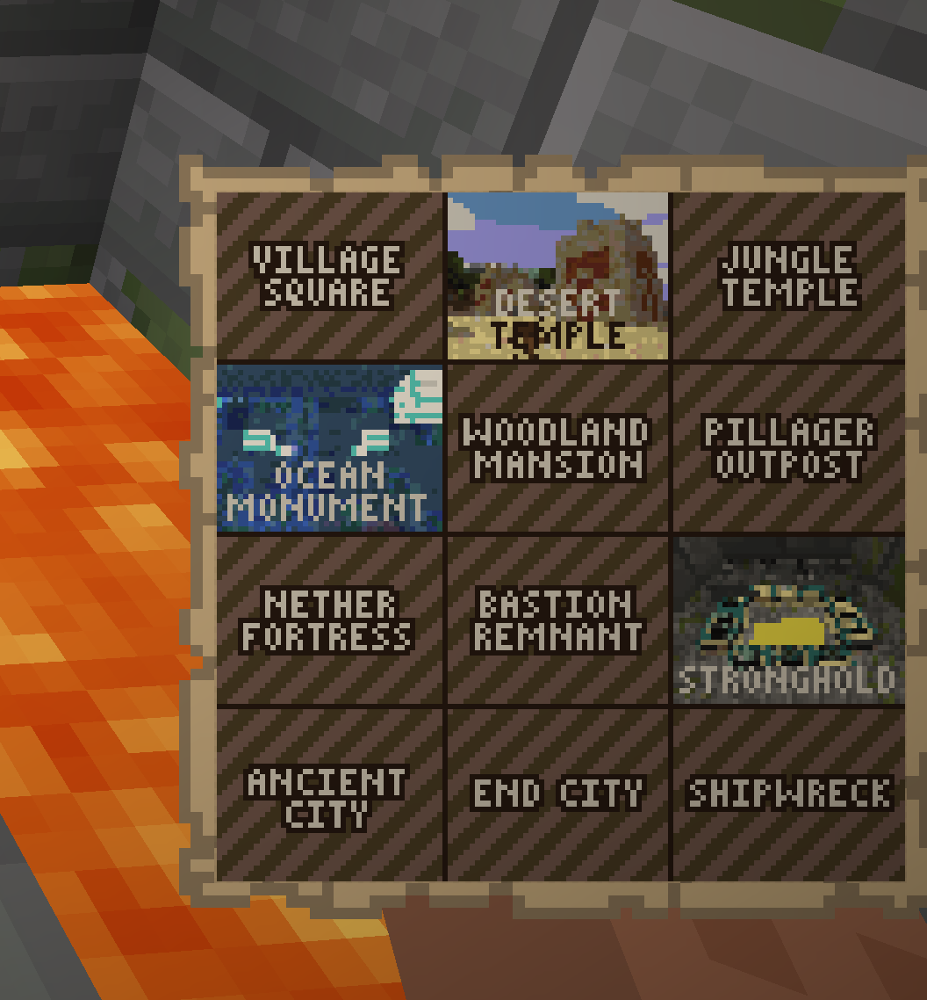
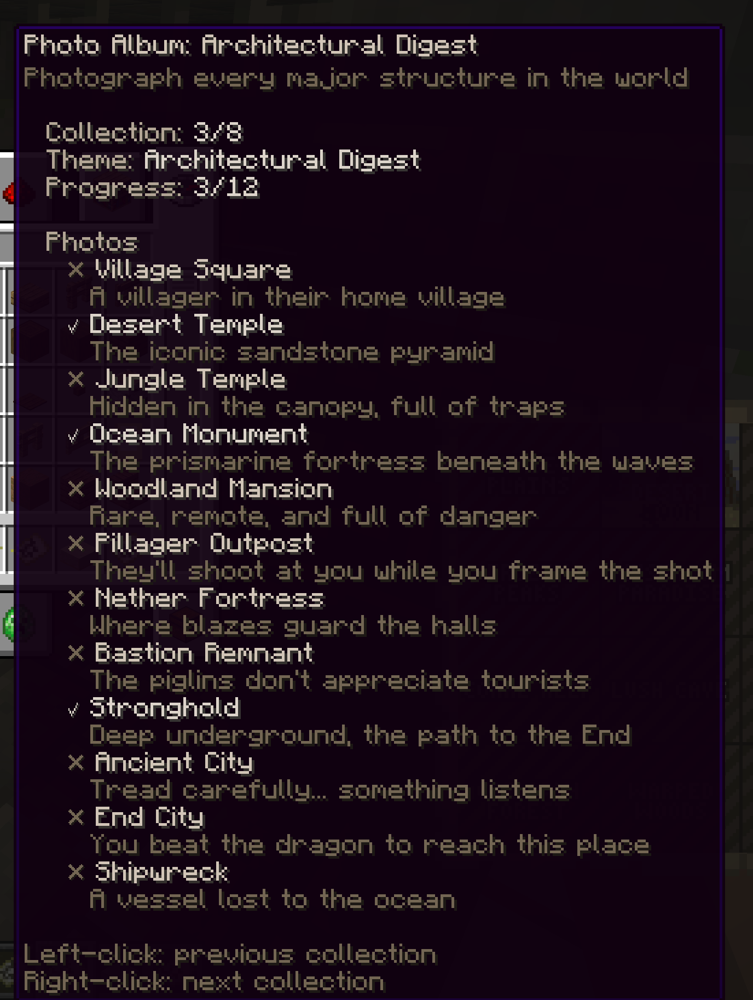
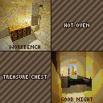
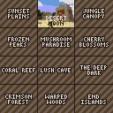
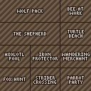
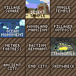
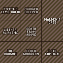
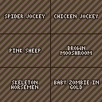
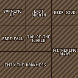
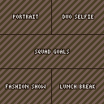

Albums And Collections
Albums are map-based collection trackers. They show the selected collection, the current collection position, captured photo count, missing subjects, and a collage preview of the photos saved for that album.

Getting An Album
By default, players craft a photo album with a glass pane, paper, and a book and quill in the center column. Some servers also allow /sb album as a convenience command.
Hold the album and use:
- Left-click to move to the previous collection.
- Right-click to move to the next collection.
/sb album refreshto redraw the album in your hand.
Reading Album Progress
Album lore shows the selected collection state:
- Collection: the current collection number, such as
3/8. - Theme: the selected collection name.
- Progress: captured subjects out of total subjects.
- Photos: a checklist of every subject in the selected collection.
Captured entries use a bright checkmark and brighter subject name. Missing entries use a muted cross. Each subject also includes a short hint for what to photograph.

Album maps show the selected collection as a collage. Missing subjects use labelled placeholder tiles. Captured subjects use the actual photo that completed that subject.

Exporting Album PNGs
Run /sb album export to write PNG copies of your album collections. ShutterBug saves each generated image as album.png beside the album subject files:
plugins/ShutterBug/albums/<player-uuid>/<collection-id>/album.png
Use /sb album export <collection> to export one collection or /sb album export all to export every collection. Admins with album management access can run /sb album export <player> [collection|all] for an online player.
Built-In Collection Guide
These are the default collections included with ShutterBug. Server owners can edit collections.yml, so your server may differ.
Postcards
Capture the beauty of every landscape. Wish you were here.

| Photo | Description | How to capture |
|---|---|---|
| Sunset Plains | Golden hour over the grasslands. | take a photo in a plains biome during sunset. |
| Desert Noon | Blazing sun over endless dunes. | take a photo in a desert biome during daytime. |
| Jungle Canopy | Dense tropical wilderness. | take a photo in a jungle biome. |
| Frozen Peaks | Breathtaking mountain views. | take a photo in a frozen peaks biome. |
| Mushroom Paradise | The rarest landscape in the world. | take a photo in a mushroom fields biome. |
| Cherry Blossoms | Pink petals drifting in the breeze. | take a photo in a cherry grove biome. |
| Coral Reef | Vibrant underwater colors. | take a photo in a warm ocean biome. |
| Lush Cave | An underground garden. | take a photo in a lush caves biome. |
| The Deep Dark | Silence. Sculk. Darkness. | take a photo in a deep dark biome. |
| Crimson Forest | An eerie red woodland of the Nether. | take a photo in a crimson forest biome. |
| Warped Woods | Alien blue forests of the underworld. | take a photo in a warped forest biome. |
| End Islands | The strange outer islands of the End. | take a photo in The End. |
Wildlife Documentary
Observe nature - animals in their element.

| Photo | Description | How to capture |
|---|---|---|
| Wolf Pack | Three or more wolves running together. | get at least three wolves in the photo. |
| Bee at Work | A busy pollinator. | get a bee in the photo. |
| The Shepherd | A wolf and sheep - predator meets prey. | get a sheep and a wolf in the same photo. |
| Turtle Beach | A turtle on the shore. | get a turtle in the photo while in a beach biome. |
| Axolotl Pool | The cutest cave dwellers. | get an axolotl in the photo while in a lush caves biome. |
| Iron Protector | A golem standing guard over its village. | get an iron golem and a villager in the same photo. |
| Wandering Merchant | The trader and both his llamas. | get a wandering trader and at least two trader llamas in the photo. |
| Fox Hunt | A fox eyeing its next meal. | get a fox and a chicken in the same photo. |
| Strider Crossing | Lava-walking across the Nether. | get a strider in the photo while in the Nether. |
| Parrot Party | Two or more parrots together. | get at least two parrots in the photo. |
Architectural Digest
Photograph every major structure in the world.

| Photo | Description | How to capture |
|---|---|---|
| Village Square | A villager in their home village. | photograph a villager while the frame includes a village structure. |
| Desert Temple | The iconic sandstone pyramid. | take a photo while the frame includes a desert pyramid. |
| Jungle Temple | Hidden in the canopy, full of traps. | take a photo while the frame includes a jungle pyramid. |
| Ocean Monument | The prismarine fortress beneath the waves. | take a photo while the frame includes an ocean monument. |
| Woodland Mansion | Rare, remote, and full of danger. | take a photo while the frame includes a woodland mansion. |
| Pillager Outpost | They'll shoot at you while you frame the shot. | take a photo while the frame includes a pillager outpost. |
| Nether Fortress | Where blazes guard the halls. | take a photo while the frame includes a Nether fortress. |
| Bastion Remnant | The piglins don't appreciate tourists. | take a photo while the frame includes a bastion remnant. |
| Stronghold | Deep underground, the path to the End. | take a photo while the frame includes a stronghold. |
| Ancient City | Tread carefully... something listens. | take a photo while the frame includes an ancient city. |
| End City | You beat the dragon to reach this place. | take a photo while the frame includes an End city. |
| Shipwreck | A vessel lost to the ocean. | take a photo while the frame includes a shipwreck. |
Tricky Situations
Every shot here has a story.

| Photo | Description | How to capture |
|---|---|---|
| Ticking Time Bomb | Photograph ignited TNT - then run. | get primed TNT in the photo. |
| Charged Creeper | A creeper struck by lightning. Incredibly rare. | get a charged creeper in the photo. |
| Warden's Gaze | It knows you're there. It's angry. | get an angry warden in the photo. |
| Wither Awakens | Capture the moment of creation - and destruction. | photograph the Wither while it is spawning. |
| Death From Above | A falling anvil - timing is everything. | get a falling anvil in the photo. |
| Raid Captain | The patrol leader with the ominous banner. | get a raid captain in the photo. |
Rare Encounters
Things most players have heard of but never witnessed.

| Photo | Description | How to capture |
|---|---|---|
| Spider Jockey | A skeleton riding a spider - 1% spawn chance. | get a skeleton riding a spider in the photo. |
| Chicken Jockey!! | chicken jokey!!!! | get a zombie riding a chicken in the photo. |
| Pink Sheep | 1 in 512 natural sheep are pink. | get a pink sheep in the photo. |
| Brown Mooshroom | A mooshroom struck by lightning - incredibly rare. | get a brown mooshroom in the photo. |
| Skeleton Horsemen | The eerie skeleton trap horse, triggered by lightning. | get a skeleton riding a skeleton horse in the photo. |
| Baby Zombie in Gold | The tiny terror in full golden armor. | get a baby zombie wearing golden armor in the photo. |
| Invisible Mob | Where did it go? Oh, there it is. | get an invisible mob in the photo. |
| Cows and Cows | Mushroom, Brown Mooshroom, Cow, and Baby Cow. | get a mooshroom, a cow, a brown mooshroom, and a baby cow in the photo. |
| The Crossing | Fox, Chicken, Seeds, and a Boat. A classic puzzle. | get a fox and chicken in the photo while wheat seeds are detected nearby. |
| Herobrine | He is real. | photograph a Herobrine shrine. |
Extreme Selfies
All require selfie mode. You are the story.

| Photo | Description | How to capture |
|---|---|---|
| Burning Up | Selfie while on fire. | take a selfie while you are on fire. |
| Last Breath | Selfie with 3 or fewer hearts. | take a selfie while you are at low health. |
| Deep Dive | Selfie while fully submerged. | take a selfie while underwater. |
| Free Fall | Selfie while plummeting. | take a selfie while falling. |
| Top of the World | Selfie above the clouds. | take a selfie above Y=200. |
| Withering Away | Selfie while suffering the Wither effect. | take a selfie while you have the Wither effect. |
| Into the Darkness | Selfie in total darkness - a warden is near. | take a selfie while you have the Darkness effect. |
Social Butterfly
Photography is better with friends.

| Photo | Description | How to capture |
|---|---|---|
| Portrait | Photograph another player. | get at least one other player in the photo. |
| Duo Selfie | Selfie with a friend. | take a selfie with at least one other player in the frame. |
| Squad Goals | Four or more players in one photo. | get at least four players in one photo. |
| Fashion Show | Photograph someone in full netherite armor. | get a player wearing full netherite armor in the photo. |
| Lunch Break | Photograph a player eating. | get a player eating in the photo. |
Home Sweet Home
The simple comforts of a Minecraft home.
| Photo | Description | How to capture |
|---|---|---|
| Workbench | Where it all begins. | get a crafting table in the photo. |
| Hot Oven | A furnace hard at work. | get a lit furnace in the photo. |
| Treasure Chest | A chest full of possibilities. | get a chest or trapped chest in the photo. |
| Good Night | Time to rest. | get any bed color in the photo. |
Undead Mobs
Take a picture of every undead mob.
| Photo | Description | How to capture |
|---|---|---|
| Zombie | The classic undead. | get a zombie in the photo. |
| Skeleton | A rattling archer. | get a skeleton in the photo. |
| Phantom | Sleep deprivation. | get a phantom in the photo. |
| Drowned | The ocean's undead. | get a drowned in the photo. |
| Husk | The desert's undead. | get a husk in the photo. |
| Stray | The frozen undead. | get a stray in the photo. |
| Wither Skeleton | Tall, dark, and deadly. | get a wither skeleton in the photo. |
| Zombified Piglin | Neutral until provoked. | get a zombified piglin in the photo. |
| Zoglin | An aggressive undead beast. | get a zoglin in the photo. |
Admin Notes
Admins define collections in collections.yml. Good collections are specific, achievable, and easy for players to understand from album text. After changing collections, use /sb reload if available and /sb album refresh while holding an album to update its display.
Useful admin commands include /sb album give [player], /sb album status [player] [collection], /sb album reset <player> [collection|all], and /sb album export [player] [collection|all].